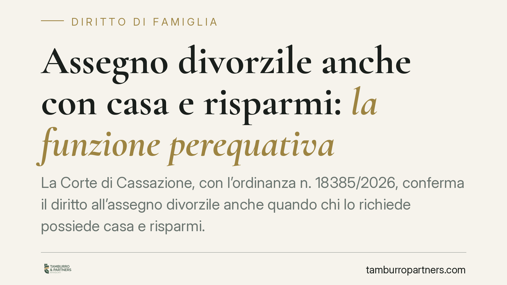

Assegno divorzile anche con casa e risparmi: la funzione perequativa
La Corte di Cassazione, con l'ordinanza n. 18385/2026, conferma il diritto all'assegno divorzile anche quando chi lo richiede possiede casa e risparmi. A pesare non è solo lo stato di bisogno, ma la disparità economica tra gli ex coniugi e i sacrifici, anche taciti, compiuti durante il matrimonio. Un chiarimento che incide su separazioni e divorzi in corso.

Il caso
La vicenda arriva in Cassazione dopo che la Corte d'appello aveva riconosciuto l'assegno divorzile alla ex moglie. L'ex marito contestava la decisione: la donna, a suo dire, disponeva già di un patrimonio personale (un immobile e disponibilità liquide) tale da escludere qualsiasi necessità di sostegno economico.
La Suprema Corte ha respinto il ricorso. Il possesso di beni, da solo, non cancella il diritto all'assegno quando permane una marcata differenza di condizioni economiche tra gli ex coniugi e quando uno dei due ha rinunciato a opportunità professionali o reddituali per dedicarsi alla famiglia.
Inquadramento normativo
L'assegno divorzile è disciplinato dall'art. 5, comma 6, della legge n. 898/1970 (legge sul divorzio). La norma indica i criteri che il giudice deve valutare: le condizioni dei coniugi, le ragioni della decisione, il contributo personale ed economico dato da ciascuno alla conduzione familiare e alla formazione del patrimonio comune, il reddito di entrambi, il tutto rapportato alla durata del matrimonio.
La svolta interpretativa risale alle Sezioni Unite n. 18287/2018. Da allora l'assegno non ha più natura meramente assistenziale (cioè non serve solo a coprire un bisogno), ma assume anche una funzione perequativo-compensativa: serve a riequilibrare le posizioni e a compensare chi, durante la vita coniugale, ha sacrificato le proprie aspettative lavorative o patrimoniali per il bene della famiglia.
L'ordinanza n. 18385/2026 si inserisce in questo solco. Conferma che la valutazione è complessiva: non basta fotografare il patrimonio attuale di chi chiede l'assegno, occorre ricostruire il percorso che ha portato allo squilibrio.
Cosa significa in concreto
Il punto centrale è questo: avere una casa e dei risparmi non esclude automaticamente il diritto all'assegno. Se quel patrimonio è modesto rispetto alle condizioni dell'altro coniuge, e se la disparità deriva dalle scelte compiute insieme durante il matrimonio, il diritto può essere riconosciuto.
Rilevano in particolare i cosiddetti sacrifici taciti: la rinuncia a una carriera, il lavoro domestico non retribuito, il sostegno dato all'attività o alla crescita professionale dell'altro. Si tratta di contributi spesso non documentati da buste paga o contratti, ma che la giurisprudenza considera economicamente valutabili.
Per chi versa l'assegno, questo significa che non è sufficiente dimostrare che l'ex coniuge "non è povero". Occorre contestare l'esistenza stessa dello squilibrio o del nesso con le scelte matrimoniali.
Per chi lo richiede, la prova dei sacrifici compiuti e del divario economico diventa decisiva. La durata del matrimonio, in questo quadro, pesa: più è lungo, più è plausibile che le scelte di coppia abbiano inciso sulle prospettive individuali.
Cosa fare in concreto
- Ricostruite il percorso economico del matrimonio: raccogliete documentazione su redditi, contributi previdenziali, scelte professionali e carichi familiari di entrambi i coniugi.
- Documentate i sacrifici anche non retribuiti: dedizione alla famiglia, rinuncia al lavoro, supporto all'attività dell'altro coniuge. Testimonianze e riscontri indiretti possono rilevare.
- Valutate l'intero quadro patrimoniale, non solo il reddito: immobili, risparmi, capacità di produrre reddito futuro. La disparità si misura sul complesso delle condizioni.
- Chi versa l'assegno conservi evidenze della propria situazione economica e verifichi se le condizioni della controparte siano effettivamente mutate: un cambiamento rilevante può giustificare una domanda di revisione.
- Prima di avviare o resistere a una domanda, consigliamo un'analisi preventiva della documentazione: l'esito dipende dalla ricostruzione dei fatti più che dalla sola fotografia patrimoniale attuale.
Un orientamento consolidato
L'ordinanza non introduce una regola nuova, ma rafforza un indirizzo ormai stabile. L'assegno divorzile non è né un automatismo né un premio: è uno strumento di riequilibrio, da verificare caso per caso. Chi affronta un divorzio con significative differenze economiche tra i coniugi dovrebbe impostare la propria posizione tenendo conto di questa impostazione, che valorizza la storia concreta della coppia più del dato patrimoniale isolato.
*Contributo informativo a cura di Tamburro & Partners - Avv. Giuseppe Tamburro. Non costituisce parere legale.*
Ogni famiglia ha il suo equilibrio.
Separazione, divorzio, affidamento, assegno: se vuoi un confronto riservato su una specifica situazione, scrivi allo studio. Ti rispondiamo entro un giorno lavorativo.